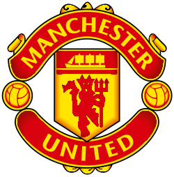

Manchester United Football Club adalah klub sepak bola profesional ternama dunia yang berbasis di Old Trafford, Manchester Raya, Inggris. Klub berjuluk "The Red Devils" (Setan Merah) ini berkompetisi di kasta ter tinggi sepak bola Inggris, Premier League. Di bawah kepemimpinan pelatih kepala permanen Michael Carrick, United sukses mengamankan posisi untuk kembali berlaga di UEFA Champions League.